THE TREE · T8 — big Geigers, no aggregates, no black space, the podium as a staircase a king can walk down
2 Oct 2026, night · built on the live Hub page tree-map (branch hub/t8-tree-big-geigers-20261002, not deployed) · every picture is a real headless-browser shot, examined by eye: the BEFORE pictures are the live page tonight, the AFTER pictures the branch, at 1920 × 1080 (scale 1 — the Apple TV) and 1680 × 1000 (scale 2 — the Retina Mac) · numbers tagged [MEASURED] come from the recorded walks (deliverables/20260929/tree-map/shots/t8-before-proof.json · t8-after-proof.json)
1 · THE PICTURES FIRST
1.1 The whole map, CLEAN, at 1920 × 1080 — before → after
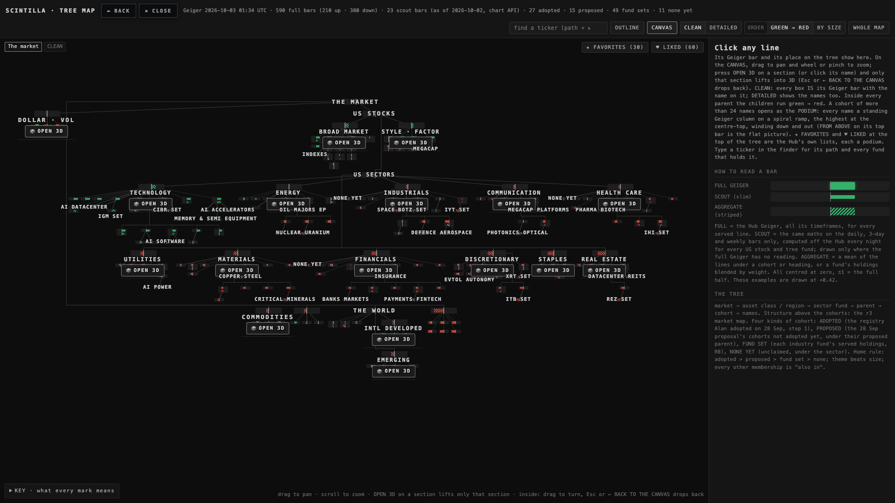
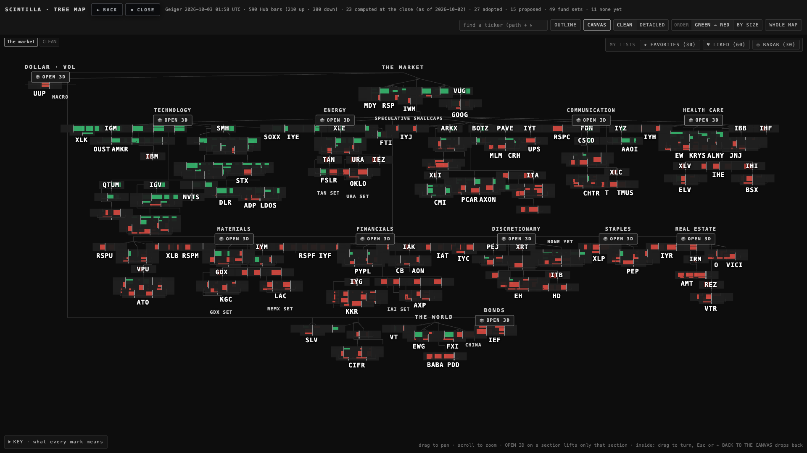
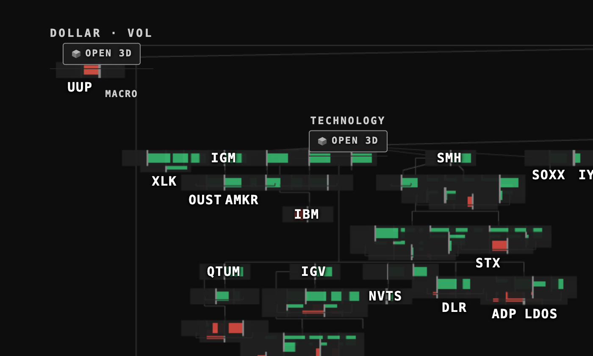
1.2 Technology opened (OPEN 3D)
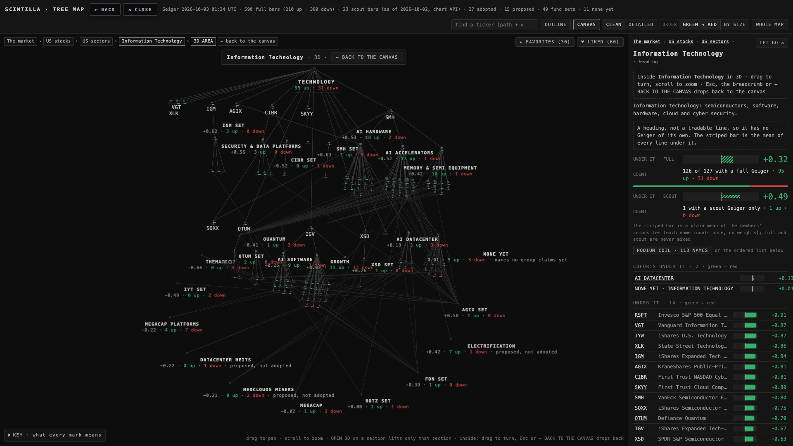
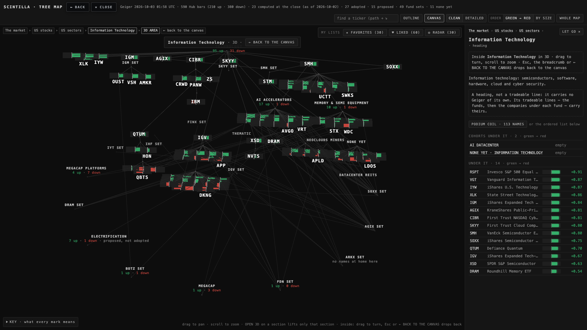
1.3 The Technology podium (113 names) — the staircase
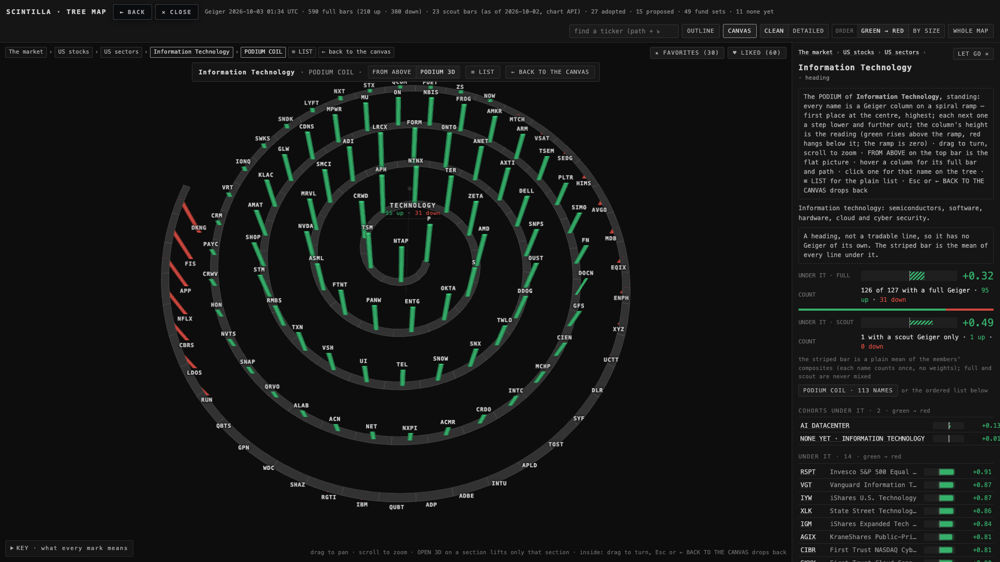
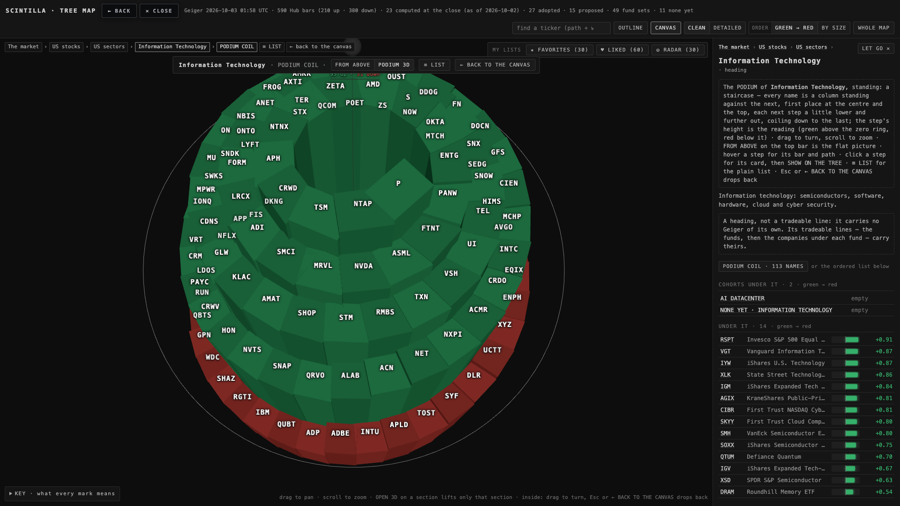
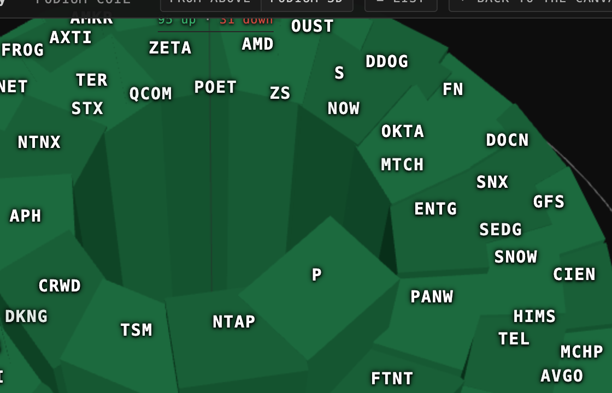
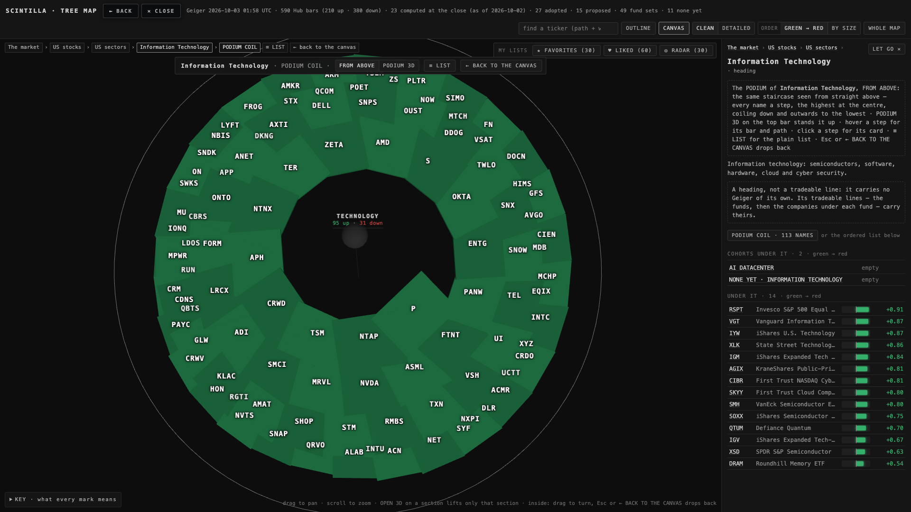
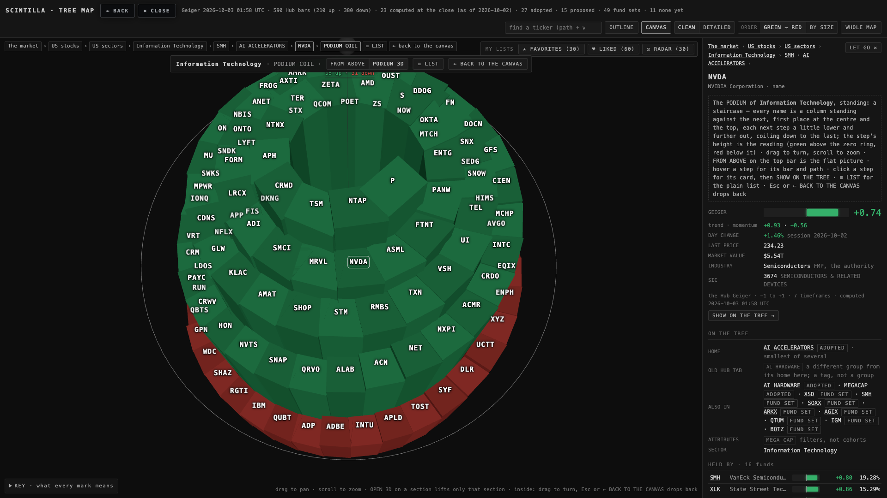
1.4 MY LISTS — ★ FAVORITES · ♥ LIKED · ◎ RADAR, apart from the tree
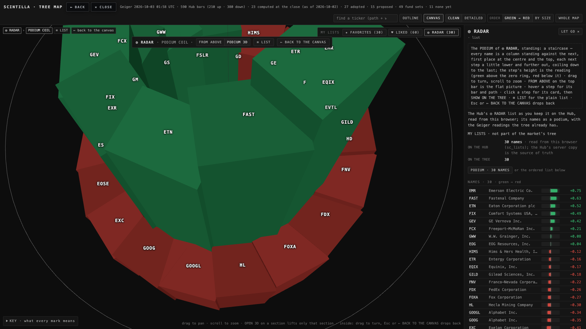
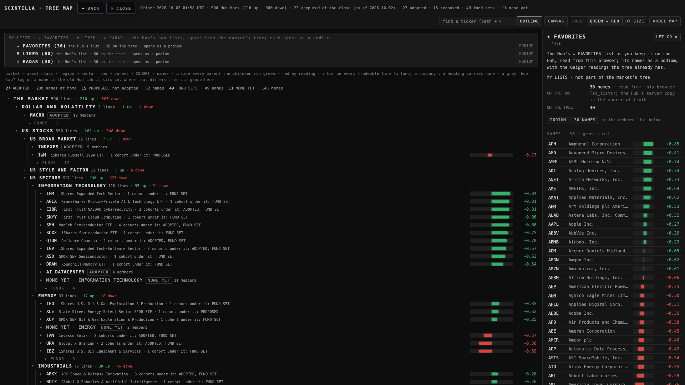
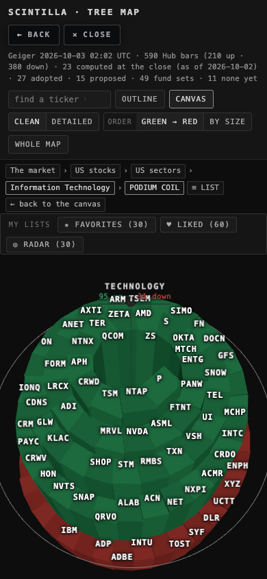
2 · IN PLAIN WORDS, ITEM BY ITEM
- The Geiger is the biggest thing on the screen. A tradeable's bar is now 96 × 30 units of the map (was 84 × 28 for a fund, and companies were not drawn at all in CLEAN) with a floor of 60 × 19 px at any zoom (was 21 × 7). The ticker sits on the bar, white, 15 px (was 11–12 px grey). The titles (sectors, parents, cohorts) keep their style. No dots or balls remain where a bar stands for the thing — in CLEAN and inside an opened section alike.
- No aggregates. A sector, a parent, a cohort or a Hub list carries no bar of its own; its funds, then the companies under each fund, carry theirs. The striped mean bars are gone from CLEAN, DETAILED, the cards and the 3D views; the code stays behind one flag (SHOW_AGGREGATES = false). The page's words never say "scout", "aggregate" or "striped" [MEASURED: 0 of each on every screen of the walk; the live page says "scout" 3 times and "aggregate" twice]. The off-Hub names' Geiger (seven rungs, equal to the Hub's at the close) is drawn exactly like the Hub's; its hover and card say "computed at the close".
- The side text is gone. No "Click any line", no HOW TO READ A BAR. The side panel is empty — and hidden — until something is clicked, so the canvas has the whole width [MEASURED: panel 0 px at the start, 400 px after a click; was 400 px always].
- No black space. CLEAN packs with its own distances: columns 104 units apart, rows 36, tree levels 70 (was 120), so siblings sit close; a label never sits on another label or on another thing's bar [MEASURED below: 0 at every size, in the whole map, Technology and Financials; the live page had 85 and 121 labels lying on other boxes]. What remains: at the whole-map zoom-out the 60 px floor makes neighbouring bars overlap each other (2,602 pairs at 1920); zoom one notch and they separate. Decision 1 below.
- The podium is a staircase. Steps touch (gap 0 along the outer edge, by construction and measured), every drop between neighbours is at most one tread's width, the treads fall from the first place at the centre-top to the last at the outer bottom, green above zero and red below. Decision 2 says what changed from T7's "the ramp is zero" rule and why. FROM ABOVE is the same staircase as flat slabs, no gap.
- Click on a step = the card first, then SHOW ON THE TREE → jumps to that name on the tree (in CLEAN, which now draws it; only a name with no reading needs DETAILED).
- MY LISTS — ★ FAVORITES · ♥ LIKED · ◎ RADAR — one area at the top-right of the canvas and one block above the outline, apart from the market's tree; each opens its podium. RADAR comes from the Hub's browser mirror (sc_lists.radar), like FAVORITES.
- Camera 70° stays the default for PODIUM 3D (FROM ABOVE looks from 88°).
3 · BEFORE → AFTER, THE NUMBERS [MEASURED]
| what | screen | before (live page) | after (the branch) |
|---|---|---|---|
| a fund's bar on the screen at the zoom-out (height) | 1920 × 1080 @ 1 · 1680 @ 2 | 7 px · 7 px | 18.7 px · 18.8 px (60 px wide) |
| a company's bar at the zoom-out | both | not drawn in CLEAN | 18.7 px tall, 60 px wide · 475 of them |
| the ticker's font on a bar | both | 11 px (company) · 12 px (fund), grey | 15 px, white |
| bars drawn for things that are not tradeable (aggregates) | both | 87 | 0 |
| labels lying on another label · on another thing's box — whole map | 1920 · 1680 | 0 · 85 — 0 · 121 | 0 · 0 — 0 · 0 |
| the same — Technology opened · Financials opened | 1920 · 1680 | (balls, no boxes to measure) | 0 · 0 at both sizes |
| the words "scout" · "aggregate" on the page | both | 3 · 2 | 0 · 0 |
| the side panel before anything is clicked | both | 400 px | 0 px (canvas 1920 / 1680 wide) |
| Technology podium: black between two neighbouring columns (largest) | 1920 · 1680 | 61.7 px · 56 px | GAPWORLD |
| Technology podium: biggest drop between neighbours (units) · the cap | both | 36.4 · none | 30 · 30 (H lowered 260 → 216.5) |
| Technology podium: tickers printed of 113 (never overlapping) | 1920 · 1680 | 114 · 114 | 103 · 97 (the rest show on zoom or hover) |
| the walk: page errors | 3 runs | 0 | 0 |
4 · WHAT COULD BE WRONG · WHAT WAS NOT DONE
- At the whole-map zoom-out the 60 px floor makes neighbouring bars overlap (they still read as colour fields; zoom one notch and they separate). The brief asked for both "biggest" and "no black space"; the floor is the trade. Decision 1.
- Inside an opened section (OPEN 3D) the tree's own 3D arrangement still leaves open space between blocks and the "also in" lines fan far out; the labels and bars no longer collide, but the picture is busy. Not re-laid-out tonight.
- The staircase's step heights are subtle from 70° when the readings are close (Technology's 113 names span 1.9 units over 113 steps). The alternate shading makes each step read; dragging the camera lower shows the heights. The height scale is capped by the "no cliff" rule.
- Tickers on the staircase: 103 of 113 printed at 1920 (97 at 1680) — a ticker that would overlap another is not printed; hover shows it.
- The Hub's own 3D (WHOLE MAP 3D, DETAILED) keeps balls with small bars; the brief's items were about CLEAN, the sections and the podium.
- Not deployed. The coordinator reviews and ships.
5 · DECISIONS FOR ALAN (≤ 3)
1 · How big at the zoom-out? The bar floor is 60 × 19 px, so at the whole-map zoom-out 613 bars overlap each other in the tight blocks. A 40 px floor would overlap less and read smaller. Recommendation: keep 60 px — you look at a sector, not at the whole map, on the TV; the whole map is the way in.
2 · The zero line on the staircase. T7's rule was "the ramp is zero" with red columns hanging under it — which left nothing to walk on in the red half. Tonight the stair IS the readings: every step's top is its Geiger (above zero green, below zero red), all standing on one floor under the lowest, and the zero level is the grey ring round the stair. Recommendation: keep it — it is the only way the walk continues through the red names.
3 · Step drop cap. The biggest drop between two neighbours is capped at one tread's width (30 units) by lowering the height scale (floor 60 per unit). Recommendation: keep the cap at one tread; if the stair feels too flat on a list with one outlier, raise the cap to two treads.